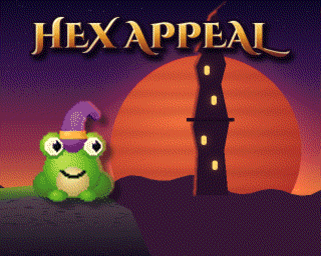

Rooms in the dark
Every room is dark until you hop in. Then the torches catch, and you see what's waiting for you. Usually something bored, and occasionally something with cutlery.
A small frog in a deep hex.
Fennick Tumbril brewed a potion to make himself irresistible. He got one word of the recipe wrong, and now he's a frog at the bottom of a very old, very dark dungeon.
Hop up through the Undercroft, room by dark room. Zap the monsters, win the runes, outwit the rival magicians, and brew the cure before your master gets home.

The story
In the Long Afternoon of the world, when the sun had grown old and red and was in no particular hurry, there stood a crooked tower called the Quire. It belonged to Ozimand Vey the Elaborate, a magician of considerable reputation, most of which he had written himself.
His apprentice, Fennick Tumbril (junior apprentice, under-scullion and part-time hat stand), had a problem. The Midsummer Revel was in three days, and Fennick had a face like a damp Tuesday. So, while his master was away, Fennick borrowed the grimoire. Just to look.
The Philtre of Irresistible Hex Appeal called for a lark's tongue. Fennick, whose handwriting was as bad as his reading, used a frog's.
It worked perfectly. On the frog.
That same night, the Conclave of the Unremarked came calling. Fennick was swept down the scullery drain, and woke at the very bottom of the Undercroft: halls older than the tower, older than anyone's memory, and currently full of other people's monsters.
To be human again, he must climb. Up through the dark. Up to the Workshop. And brew the cure before his master gets home.
What's coming
What's planned. Our own game, inspired by the 8-bit classics we grew up on.
Every room is dark until you hop in. Then the torches catch, and you see what's waiting for you. Usually something bored, and occasionally something with cutlery.
Win runes, old letters cut in glowing slate, and spend them on spells: stronger bolts, a shield, more power, and tricks for finding hidden doors.
Each level hides one of the Conclave of the Unremarked: grand, absurd magicians who are furious that nobody writes about them. Catch one for a duel of wits, and take their runes.
Creaky old lifts, glowing floor glyphs and drains with a long way down join the levels up. Climb steadily, take a risky shortcut, or slide back down with a splosh.
A second player can join as Glim, Fennick's firefly: lighting rooms early and zapping small things. Glim can't be hurt, only get dizzy, for a friend who'd rather light the way than lead it.
Stone, moss and torchlight painted pixel by pixel in the style of the 16-bit classics, using the Next's full palette, over a smoothly scrolling dungeon.
An adventurous score on all three of the Next's sound chips, with drums, that swells into battle when the monsters notice you and calms down when they've stopped.
A narrator who can't resist a joke, and rival magicians who taunt you out loud. "Ah. A frog. How... unprecedented."
A properly creepy Undercroft, rivals who are pompous and genuinely dangerous, and a narrator who has seen it all. For anyone who remembers the 8-bit days, and anyone who wishes they did.
Screens
The game so far, as a real Next draws it: early days, so the painted art is still on its way in. Click a picture to see it bigger.
Changelog